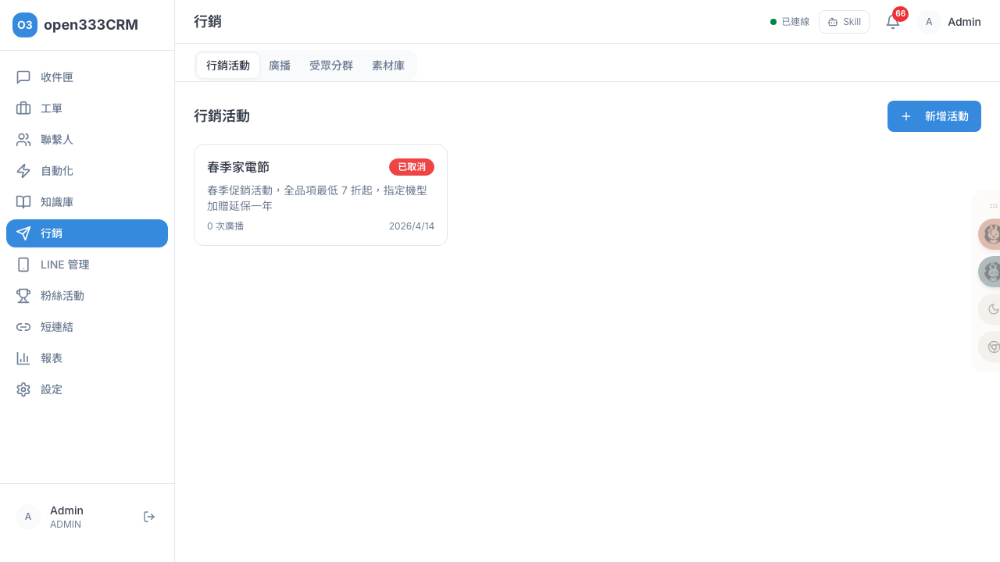
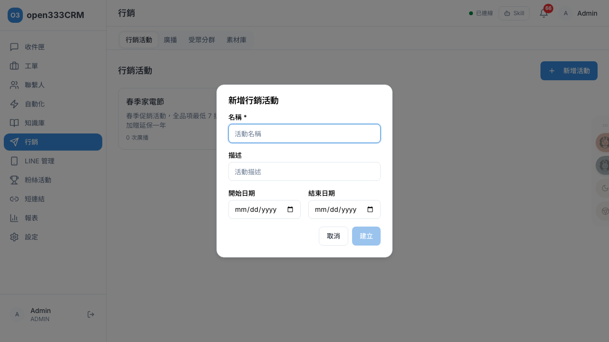
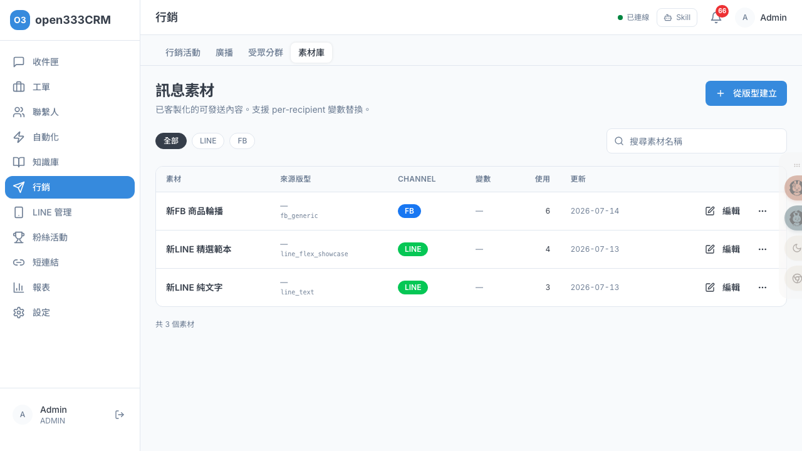
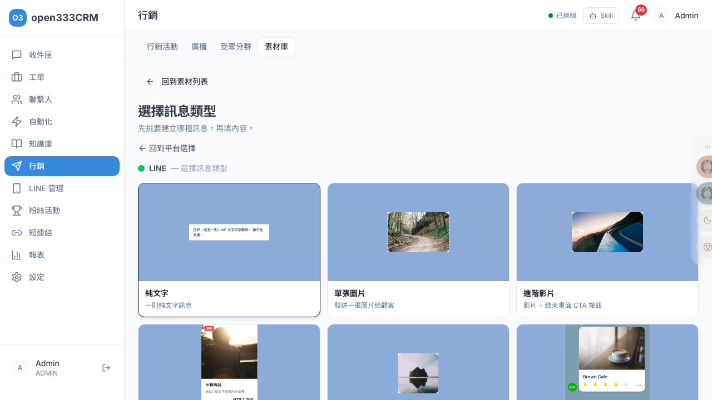
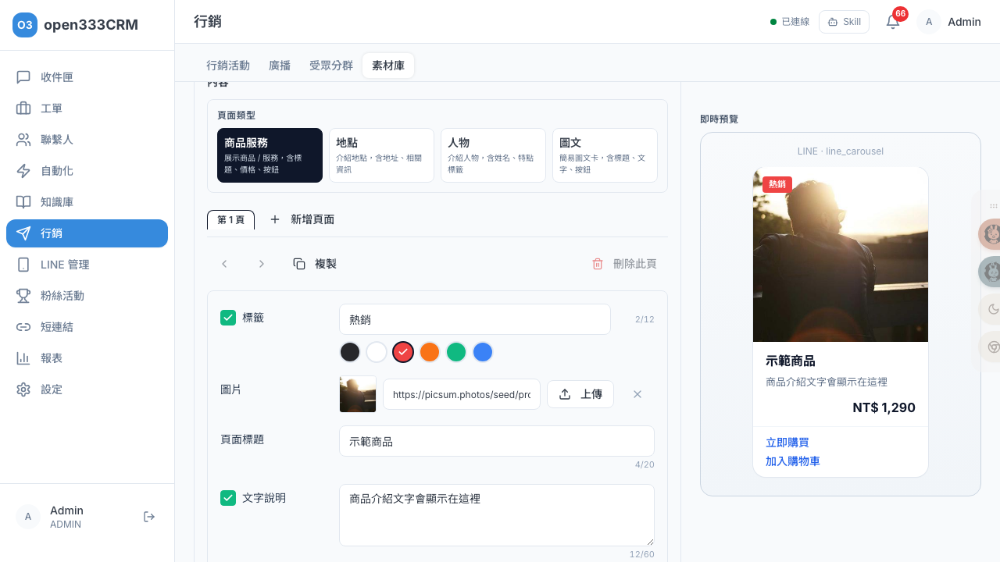

行銷推播
建立受眾分群、行銷活動與群發訊息，套用素材模板做個人化發送。把對的訊息，在對的時間，送給對的一群人。
1 功能總覽
行銷模組分四塊，透過分頁切換：
| 分頁 | 做什麼 |
|---|---|
| 行銷活動 | 把多次廣播歸為一個活動，統一看成效 |
| 廣播 | 選渠道 + 素材 + 受眾，實際發送訊息 |
| 受眾分群 | 用條件圈選出一群聯繫人 |
| 素材庫 | 可視化編輯 LINE / FB 各種訊息素材 |
2 行銷活動
「行銷活動」把多次群發歸類成一個活動來追蹤成效。

| 狀態 | 意義 | 可做的操作 |
|---|---|---|
| 草稿 | 尚未啟動 | 啟動、刪除 |
| 進行中 | 活動執行中 | 完成、取消 |
| 已完成 / 已取消 | 結束 | — |
點入活動詳情可看 6 張成效卡：總發送、成功送達、失敗、送達率、回覆（含回覆率）、引發開案。
3 建立活動
在「行銷活動」分頁點「新增活動」，填寫活動基本資訊。

| 欄位 | 必填 | 說明 |
|---|---|---|
| 名稱 | ✓ | 活動名稱 |
| 描述 | 活動說明 | |
| 開始 / 結束日期 | 活動期間 |
建立後為草稿，點入詳情可「啟動」；進行中可「完成」或「取消」。
4 建立廣播
廣播是實際發送的動作。在「廣播」分頁點「建立廣播」，依序設定：
| 受眾類型 | 說明 |
|---|---|
| 全部聯繫人 | 發給所有人 |
| 受眾分群 | 發給某個分群（見下節），選後需再「選擇分群」 |
| 依標籤篩選 / 手動選擇 | 依標籤或逐一勾選 |
5 受眾分群
「受眾分群」用條件圈出一群聯繫人，供廣播鎖定。點「新增分群」填名稱，選條件邏輯與規則：
| 設定 | 選項 |
|---|---|
| 條件邏輯 | 全部符合 (AND) / 任一符合 (OR) |
| 條件欄位 | 渠道類型 / 標籤 / 建立日期（之後）/ 建立日期（之前） |
加完條件後點「預覽人數」確認符合範圍（顯示「符合人數：N」），再按「建立」。
6 素材庫
素材庫是行銷模組的內容中心——所有要群發或自動回覆的訊息內容都在這裡製作、保存與重用。它支援 LINE / FB 各種豐富訊息格式，並提供可視化編輯器與即時預覽，讓不懂程式的人也能做出專業的圖文訊息。素材可含變數，發送時依收件人個人化替換。

列表可用渠道 chip（全部 / LINE / FB）與搜尋框過濾。每筆素材可「編輯」，或用更多選單「複製 / 刪除」（軟刪，可在後台復原）。
建立素材：三步驟
點列表右上「從版型建立」，進入三步驟建立流程：
STEP 2 — 選擇訊息類型
選完平台後，會看到該平台所有訊息類型的視覺化卡片，每張卡都有樣式縮圖與說明，直接點卡片進入編輯器：

STEP 3 — 可視化編輯器
進入編輯器後，左側是編輯區、右側是即時預覽（所見即所得，會顯示訊息在 LINE / FB 中實際的樣子）。以「LINE 多頁訊息」為例：

編輯器頂部先填素材的基本資訊（素材名稱必填、分類、描述），下方是該訊息類型專屬的可視化編輯區。多頁訊息可切換頁面類型（商品服務 / 地點 / 人物 / 圖文）、以分頁管理多張卡片（新增頁面 / 複製 / 刪除），每張卡可設標籤（含顏色）、圖片、標題、文字說明與按鈕，欄位都有字數上限提示。LINE 版型還可加快速回覆按鈕。編輯完點「存為素材」。
支援的訊息類型
| 平台 | 訊息類型 |
|---|---|
| LINE | 基本：純文字、單張圖片、進階影片（影片 + 結束畫面 CTA 按鈕） |
| 進階：多頁訊息（多張卡片輪播）、圖文訊息（一張大圖切成多個可點區域）、精選範本（套用官方設計範本）、匯入 Flex JSON（貼上 LINE Flex Simulator 產出的 JSON） | |
| FB | 基本：純文字、單張圖片、影片 |
| 進階：商品輪播、按鈕選單（文字 + 1-3 顆按鈕）、大圖／影片廣告、優惠券、訂單收據、滿意度調查（CSAT / NPS 評分量表） |
變數與個人化
素材內容可插入 {{變數}}（如 {{contact_name}}），發送時系統會依每位收件人替換成實際值，做到個人化群發。列表的「變數」欄會顯示該素材含幾個變數。